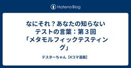

直近1週間の更新
8/9 (土)

【Go】Goのテストに入門してみた！ ~並行テスト編~  Zennの「Test」のフィード
Zennの「Test」のフィード
はじめに前回は、「テストの前処理・後処理」を見ていきました。今回は、「並行テスト」に入門します！前回の記事はこちら！https://zenn.dev/tmyhrn/articles/a93e750fde5d28 この記事でわかることテストを並行実行する方法テスト結果の見方並行実行するケース 普通にテストしてみる擬似的に、以下のような高負荷な処理を実行します。main_test.gopackage mainimport ( "testing" "time" "unicode/utf8")func Length(s st...
13時間前
8/8 (金)

FlutterでCachedNetworkImageのVRTを実施 Zennの「Test」のフィード
Flutterでcached_network_imageを使ったゴールデンテスト（VRT）実装ガイド はじめにcached_network_imageは、Flutterで画像をキャッシュ付きでネットワークから読み込む便利なパッケージです。しかしゴールデンテスト（Visual Regression Testing, VRT）では、ネットワーク依存の状態遷移（ローディング → 正常表示）をそのまま扱うと、再現性の低いテストになってしまいます。そこで本記事では、CacheManagerを差し替えてローカルPNGファイルを参照する形に変更する方法を解説します。 なぜCache...
1日前
2025/9/12 JaSST'25 Niigata ソフトウェアテストシンポジウム 2025 登壇のご紹介  QA - freee Developers Hub
QA - freee Developers Hub
2025年9月12日(金)に、新潟県新潟市およびオンライン上で開催される、JaSST'25 Niigata ソフトウェアテストシンポジウム 2025に、フリーのプロダクトマネージャー森川が事例発表として登壇いたします。 タイトル: 自分たちがターゲットになりにくい業務アプリケーションのユーザビリティを担保する取り組み 内容: UI設計やそのレビューにおいて、「ユーザー視点で」という言葉を聞くことがあります。しかし、プロダクトのなかには、特定の業務に特化し、設計者や開発者自身がユーザーになりにくいプロダクトもあります。この場合、その視点はどのように獲得し、UIを設計し、検証するのでしょうか？業務…
1日前
8/7 (木)
バス因子とAI時代の働き方 〜「自分がいないと回らない」を脱するために〜  つーつー
つーつー
QAエンジニアのつーつーです😁夏のしんどさが増している今日この頃。40℃越えって、もう恐ろしいよｗ生成AIが進化する時代にどのように活かしていくのかについて、整理してみましたので、参考になれば幸いです！続きをみる
2日前
Our Skills, Our Styles. やりたいことを、自分らしく。唯一無二のパラパフォーマー®️「Team PTW」 PTW／ポールトゥウィン【公式】
「Team PTW（チーム・ピー・ティー・ダブリュー）」は、ポールトゥウィン株式会社と雇用契約を結び、2024年から本格的に活動を開始したパラパフォーマーのチーム。「our skills, our styles!」をテーマに、個としても、チームとしても観る人を魅了する表現を追求しています。チームの中心となるのは、フリースタイルバスケットボーラーの優和（ゆうわ）。聴覚に障害を持ちながら、音に頼らない身体感覚と空間把握で、緻密かつダイナミックなパフォーマンスを生み出します。共に活動するHARUKI（はるき）は、モザイク型ダウン症を抱えながらも、ヒューマンビートボックスを通じて自身のリズムと感性を表現。音を楽しみ、ステージを楽しむ姿勢が、観る者の心に自然と届きます。Team PTWは、イベント出演や映像の発表を通じて、「障害があっても、やりたいことを仕事にできる」というメッセージを、等身大の姿で広く届けています。チーム名の“PTW”には、ポールトゥウィンの頭文字に加え、“Positive To Work”──やりたいことを仕事にして、前向きに挑み続ける姿勢という意味が込められています。彼らは
2日前
CursorとNotion MCPを活用した「AI伴走型テスト設計」の実践プロセスと、その学び 3 Zennの「QA」のフィード
3 Zennの「QA」のフィード
はじめにはじめまして、株式会社グロービスの池邊と申します。QAエンジニアとして6年ほど、グロービスのGLOBIS学び放題やグロービス経営大学院 ナノ単科といったプロダクトのQAを担当しています。「AIがテスト設計を変えるかもしれない」そんな期待と不安が入り混じった中で、私は一つの実験を始めました。AIコーディングアシスタントの「Cursor」と、私たちの仕様書が眠る「Notion」をMCPで連携させ、テストプロセス全体を効率化できるかどうかを試してみました。グロービスのQAチームは、開発プロセスに深く関わっており、各プロダクトチームと連携しながら品質向上に取り組んでいます。日...
2日前

アニメーションのフレームをテストしない。その理由を解説します。 2
Zennの「Test」のフィード
!この記事は、CYBOZU SUMMER BLOG FES '25の記事です。「アニメーションのテストは、開始と終了の状態だけをチェックすればいい」最初は、滑らかに動く UI を見て、「テストの開始と終了しか見ていないなんて、全体像を見逃していないか？」なんて疑問に思ってました。今となっては「まあ、そうだろうな」と何となく理解しつつも、ちゃんと全体的な理由をまとめたことはありませんでした。こんにちは！サイボウズ株式会社フロントエンドエンジニアの protein_mochi です。この記事では、なぜアニメーションの「フレーム単位」をテストすることが非現実的で、代わりに取れる方...
3日前
8/6 (水)
組織に世界観を作りたい yuden
tl;dr小さなチームでマネージャーをしています。20人程度のチームの全員が働きやすくかつ同じ方向でコミットメントできるような組織にしたかったので、MVVCを定め世界観を作ってみようと試みています。ただ浸透する頃には退職しているので、ここで作った基盤がどうなるかは今後も上司と接点を作りヒアリングしてみようと思っています。続きをみる
3日前
JSTQB(ソフトウェアテスト技術者資格認定組織)、Advanced Level シラバス 日本語版 テストマネジメント Version3.0 を公開
1 特定非営利活動法人ソフトウェアテスト技術振興協会【プレスリリース】 by PR TIMES
特定非営利活動法人ソフトウェアテスト技術振興協会【プレスリリース】 by PR TIMES
[特定非営利活動法人ソフトウェアテスト技術振興協会]ソフトウェアテスト技術者資格認定の運営組織であるJSTQBは、2025 年 8 月 4 日に Advanced Level シラバス 日本語版 テストマネジメントの最新版、Version 3.0 を公開しました。本シラバスはソフトウェアテスト...
3日前

【第10回】注意はしながら、恐れずに｜実務三年目からの発見力と仮説力  品質 | Sqripts
品質 | Sqripts
帰納的な推論と発見的な推論(アブダクション) は、私たちがソフトウェア開発の現場/実務で（知らず知らずにでも）駆使している思考の形です（それどころか日々の暮らしでも使っています）。 それほど“自然な”思考の形ですが、どん...The post 【第10回】注意はしながら、恐れずに｜実務三年目からの発見力と仮説力 first appeared on Sqripts.
3日前

【Go】Goのテストに入門してみた！ ~テストの前処理・後処理編~
Zennの「Test」のフィード
はじめに前回は「一部のテストをスキップする方法」を見ていきました。今回は「テストの前処理・後処理」に入門していきます！前回の記事はこちら！https://zenn.dev/tmyhrn/articles/cc14d4e12232c2 この記事でわかることテストの前処理・後処理の実装方法テストの前処理・後処理をする上での注意点 テストの前処理・後処理テスト実行時、DB接続や環境変数設定など、事前・事後に処理しておきたいことがあると思います。そんなときGoでは、以下のように実装することができます。main_test.gopackage mainimp...
4日前
8/5 (火)

【実践】テスト特性を徹底活用！効率的かつ効果的な自動テスト設計術 品質 | Sqripts
こんにちは、QAエンジニアのうえやまです。 現在私はE2Eテスト自動化に携わっており、日々さまざまな特性を持ったテストの自動化に取り組んでいます。 本記事では、自動化したいテストの内容が決まった後、「そのテストの特性に合...The post 【実践】テスト特性を徹底活用！効率的かつ効果的な自動テスト設計術 first appeared on Sqripts.
5日前
8/4 (月)

WACATE実行委員に興味がある人の検討を加速させる  ブログ - WACATE
ブログ - WACATE
こんにちは。WACATE実行委員の村穂です。 前回のWACATEで「実行委員をやってみたい」というアンケート回答を多くいただきました。WACATE実行委員になるには、夏と冬の両方のWACATEに1回ずつ参加した経験が必要続きを読む投稿 WACATE実行委員に興味がある人の検討を加速させる は WACATE に最初に表示されました。
5日前

【和訳解説】本番環境で「Vibe Coding」を実践する方法とは？Anthropic研究者が語る、AI時代のエンジニアの新たな役割 Zennの「Test」のフィード
はじめにAIによるコード生成が日常となった今、私たちエンジニアは大きな転換点に立っています。AIを単なる「便利なツール」として使う段階から、AIを「自律的な同僚」として捉え、協業する段階へ。その最先端の概念が「Vibe Coding」です。「Claude」を開発するAnthropicの研究者 Eric氏による講演「How to vibe code in prod responsibly」が良かったので、本記事ではエンジニアの視点から深掘りして解説します。https://www.youtube.com/watch?v=fHWFF_pnqDk彼自身、事故で手を骨折し、2ヶ月間まっ...
6日前

RAGを正しく評価する。ragas 入門 Zennの「Test」のフィード
初めにここ数年で生成AIを利用したアプリケーションは急増し、内製する企業も増えています。特にRAGを利用する場合、回答精度はプロダクトの品質を決める上で重要な観点となるでしょう。製品開発の中で、回答精度の評価をExcelシートで管理したり、調査依頼することも少なくなく、これらはプロダクトの開発速度を高める上でのボトルネックとなります。そこで今回は、RAGシステムの品質を自動で評価するPythonライブラリのragasについて説明していきます。 ragasとはRAGシステムなどを自動的かつ定量的に評価するためのオープンソースのライブラリです。回答がどの程度コンテキスト（参考...
6日前

【Go】Goのテストに入門してみた！ ~一部のテストをスキップ編~
Zennの「Test」のフィード
はじめに前回は「一部のサブテストを実行する方法」を見ていきました。今回は「一部のテストをスキップする方法」に入門していきます！前回の記事はこちら！https://zenn.dev/tmyhrn/articles/bdef9d3d5ef218 この記事でわかることt.Skip() や t.Skipf() を使ってテストをスキップする方法testing.Short() と -shortフラグ を活用して重い処理を避ける方法サブテスト単位で条件に応じてテストをスキップする方法 基本的なスキップの方法main_test.gopackage mainim...
6日前

なにそれ？あなたの知らないテストの言葉：第３回「メタモルフィックテスティング」 テスターちゃん【4コマ漫画】
最近マンガを描いていないように思われがちですが、月間連載で「なにそれ？あなたの知らないテストの言葉」というマニアックなテスト用語解説マンガの連載を行っています。 いまさら気づいたのですが、ログインしないと読めない仕組みだったのですね……＞＜ 自由に見れる記事なのかと思っていました(^-^; さて、第３回はメタモルフィックテスティングについて書きました。 www.veriserve.co.jp 会員限定だとこちらのブログで内容を書いてしまったら「報酬は没収だ！」と言われかねませんねｗ 控えておきます。 メタモルフィックテスティングは、期待結果が正しいのか判定する方法(テストオラクル)がない場合に…
6日前
8/3 (日)
『ソフトウェアテスト徹底指南書』に、プロとしての矜持を見た yoya
発売直後QAエンジニア界隈で話題となった本書、自分も昨日読み終えました。 ソフトウェアテスト徹底指南書 | 技術評論社本書を通して、ソフトウェアテストの知識・技術を体系的に学びます。そしてその中でテストによって次の課題にどのように対応していgihyo.jp 続きをみる
6日前
なぜ、"1人目QA"が採れないのか くぼぴー
こんにちは。アジャイルテスティングコーチのkubopです。このnoteでは、CTOやエンジニアリングマネージャーの方によくあるお悩み、つまり、「一人目のQAがどうしても採れないんですよね……」😭続きをみる
7日前